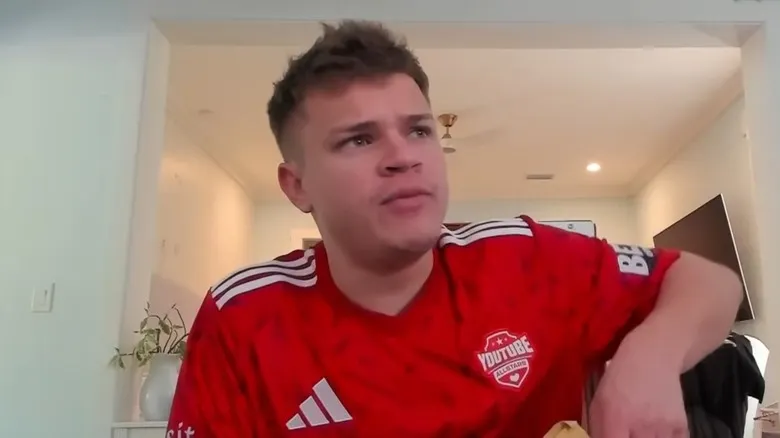
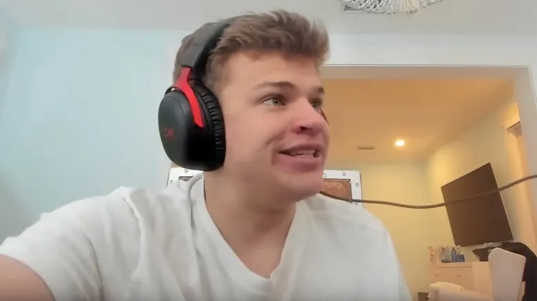
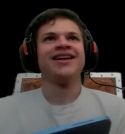

Jynxzi
Nicholas Stewart (born September 26, 2001), better known as Jynxzi, is an American Twitch streamer, YouTuber, and player of Tom Clancy's Rainbow Six Siege, an online tactical shooter game. He is the sixth most-subscribed Twitch streamer of all time. He was named "Best Breakthrough Streamer" and "Gamer of the Year" at the 2023 Streamer Awards, and later was named "Best FPS Streamer" at the 2024 Streamer Awards.
TikTok
X
Twitch
YouTube
Instagram
Career



Πηγές: Wikipedia